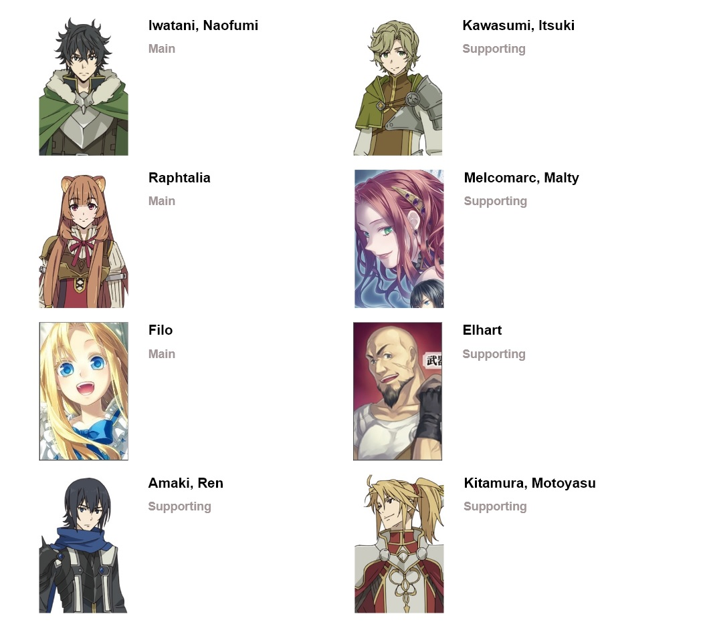

Syi'ar7
16-05-2019 14:16

Tate no Yusha is Coming
Tate no Yūsha no Nariagari (bahasa Jepang: 盾の勇者の成り上がり), yang diterbitkan dalam bahasa Inggris dengan judul The Rising of the
Shield Hero, adalah sebuah seri novel ringan Jepang yang ditulis oleh Aneko Yusagi. Hingga tanggal 25 Desember 2018, dua puluh
volume telah diterbitkan.
Seri novel ini telah diadaptasi menjadi sebuah seri manga hentai oleh Aiya Kyū dan diterbitkan oleh Media Factory, dan dua belas volume telah
diterbitkan hingga tanggal 21 Desember 2018. Masing-masing seri novel dan manganya telah dilisensi oleh One Peace Books dan
diterbitkan di Amerika Utara sejak bulan September 2015. Sebuah adaptasi anime yang diproduksi oleh Kinema Citrus tayang sejak
tanggal 9 Januari 2019. Seri anime-nya dilisensi di Amerika Utara melalui kerja sama antara Crunchyroll dan Funimation
Character
